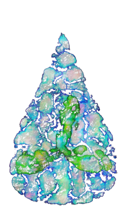

Energia Wiatru
Inspirujący tekst
Energia wiatru – energia kinetyczna przemieszczających się mas powietrza, zaliczana do odnawialnych źródeł energii. Jest przekształcana w energię elektryczną za pomocą turbin wiatrowych, jak również wykorzystywana jako energia mechaniczna w wiatrakach i pompach wiatrowych, oraz jako źródło napędu w jachtach żaglowych. W 2015 roku energia wiatru dostarczyła ludzkości 841 TWh, czyli 3,5% światowego zapotrzebowania na energię elektryczną[1]. Największy udział w krajowej produkcji energii elektrycznej miała w Danii (49,7%), Irlandii (22,9%), Portugalii (22,3%) i Hiszpanii (17,7%). W Polsce w 2015 roku energia wiatru dostarczyła 10,8 TWh, czyli 6,6% zapotrzebowania na energię elektryczną[1].